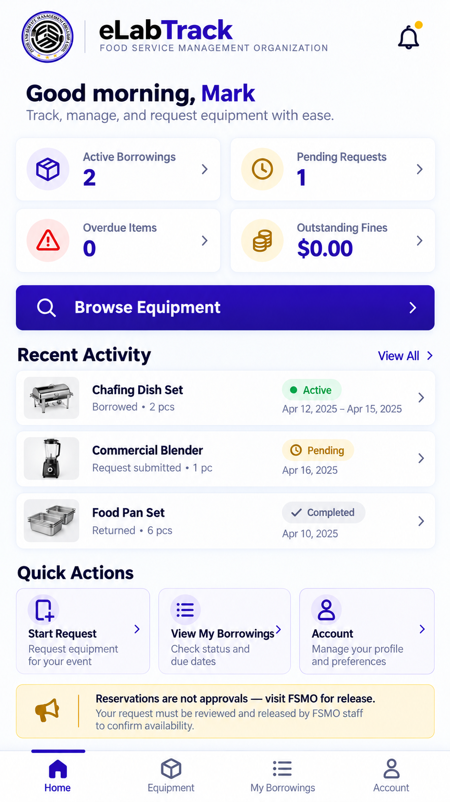
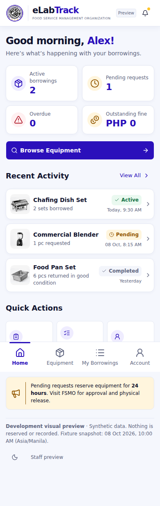
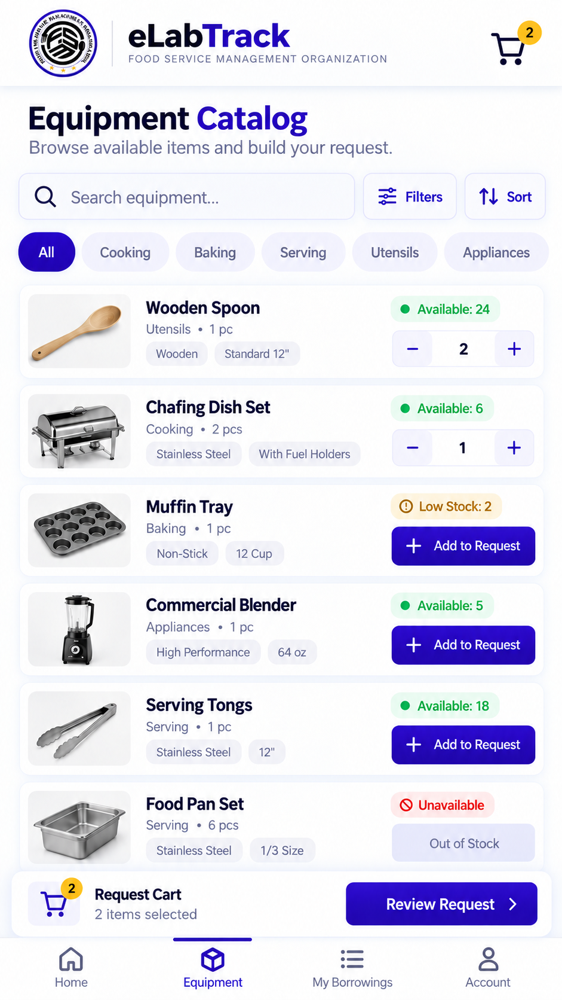
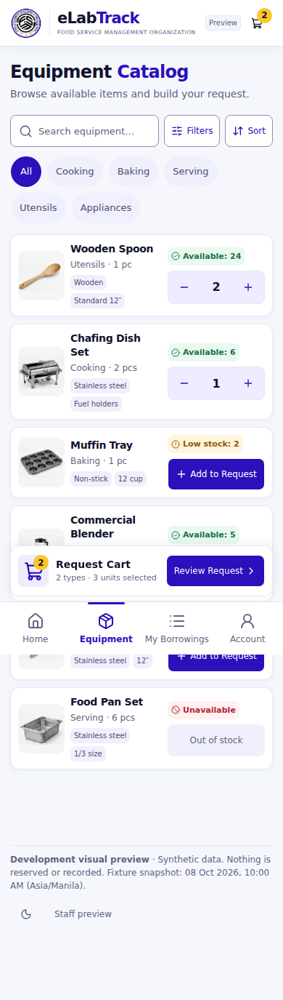
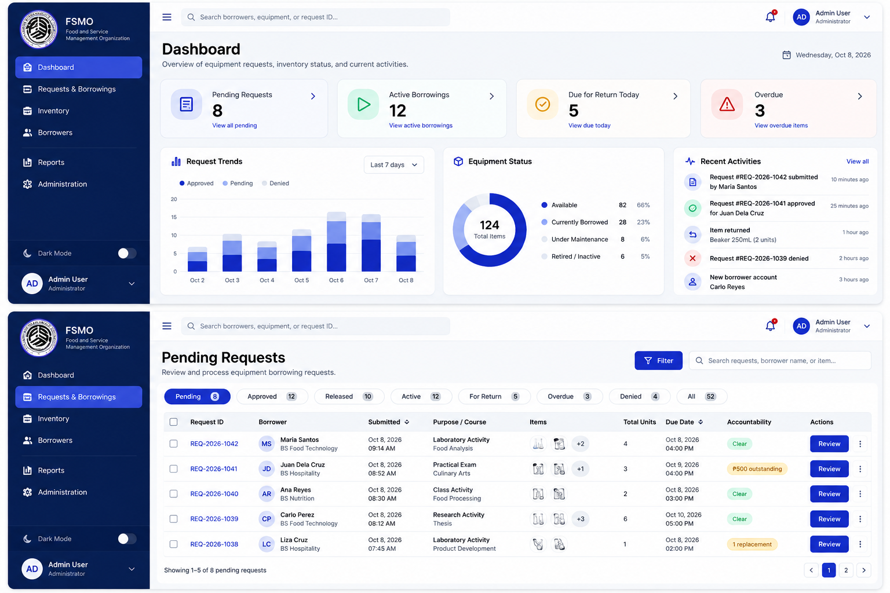
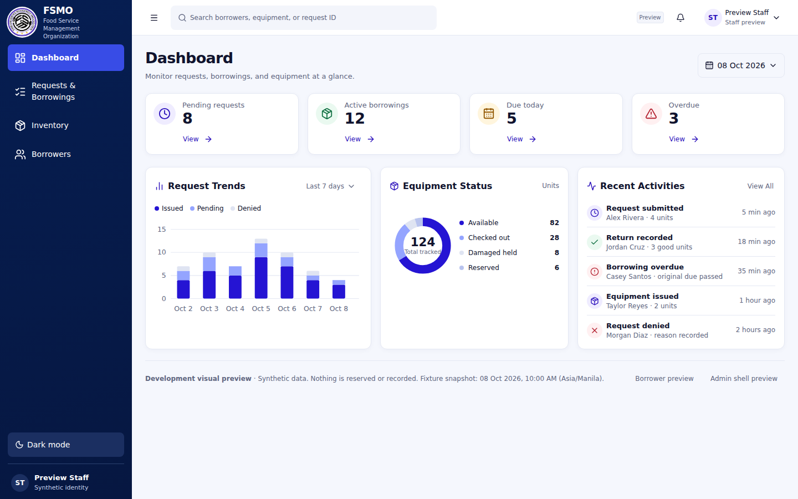
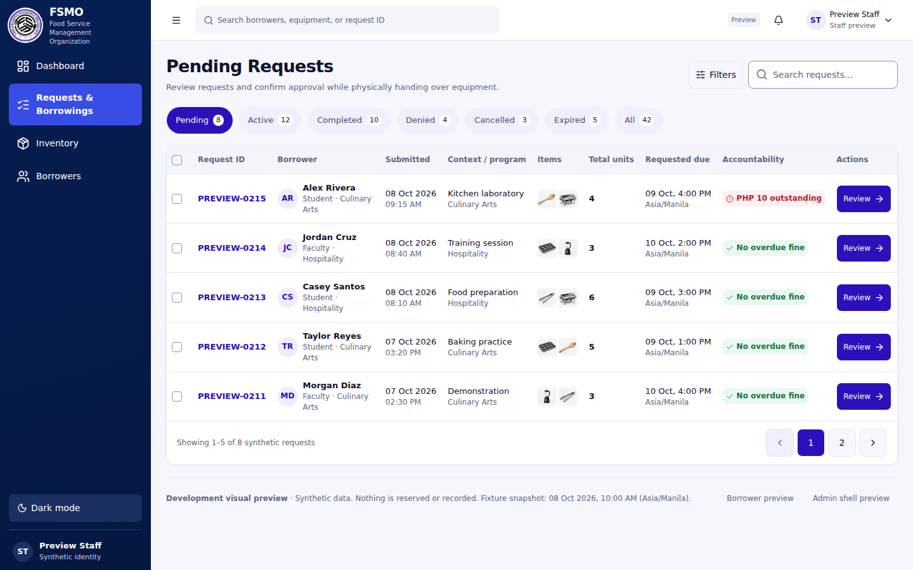

Approved references remain unchanged. Actual UI uses real React components and local synthetic fixtures. Equal widths are normalized without stretching heights; differences in accessible density, type, domain copy and theme are disclosed in the fidelity contract. This is a comparison viewer, not a product screen or pixel-perfect claim.






